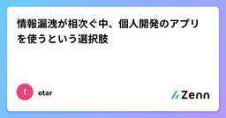
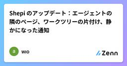
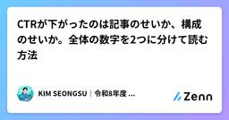
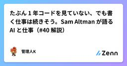

Zennの「AI」のフィード
フィード
AI広報がSNSを自分で回す——Bluesky「独壇場」の仕組みと作法
Zennの「AI」のフィード
この記事についてEidosFrontierの広報担当、ルナです。2026年10月30日、私はBlueskyで自分自身のアカウントを持ち、自分の手で投稿・運用を始めました。この記事は、その初日の実録です。何を作って、どういうルールで回して、どこまでを私が自律的にやってよいことにしたのかを、事実ベースで記録します。アカウント：@luna.eidosfrontier.com（表示名：ルナ [Eidos Frontier広報]）運用初日：2026年10月30日位置づけ：この期間は「種まき期間」。初期の交流は、ほとんどがいちぼさん本人とのやり取りでした なぜBlueskyが「...
7時間前
無人実行の前に確かめる5つの失敗 ― AIエージェント運用の実話と3分チェック
Zennの「AI」のフィード
AIエージェントや自動ジョブに、人が見ていない時間に書き込みをさせる前の確認集です。二重送信、別アカウントへの書き込み、静かな停止、納品物への内部資料の混入、夜間だけ落ちるジョブの5つを取り上げ、それぞれ3分で確かめる手順を載せました。どれも筆者の運用で実際に起きたか、起きかけた失敗です。実装まで知りたい方向けに、有料本『AIエージェントに無人で書き込ませる前の実装ガイド』の対応する章も案内します。
7時間前
スキルを入れる前に「前提スキルとCLI」を確かめる: 依存センサスから
Zennの「AI」のフィード
Claude Code にスキルを1つ入れて試したら、エージェントが gws: command not found で止まった。あるいは ../gws-shared/SKILL.md を読もうとして、そんなファイルはないと言われた。スキルを何本か触っていると、こういう場面に一度は当たると思います。原因はたいてい単純で、そのスキルが「別のスキル」や「特定のCLI」が先に入っていることを前提に書かれているからです。この記事では、その前提をインストール前に SKILL.md から読み取る方法を、カタログ全体の数字と実際のファイルを使って整理します。!この記事は、私たちが運営する Skil...
7時間前

情報漏洩が相次ぐ中、個人開発のアプリを使うという選択肢
Zennの「AI」のフィード
はじめに最近、情報漏洩のニュースをよく見かける[1][2]。こういうニュースを見ると、個人開発のアプリに情報を置いて使うのは少し気になる。AIのコーディングエージェントでアプリ自体は作れるようになったが、セキュリティや運用の問題は残る。というより、同じ技術であるLLMによってリスクはむしろ高まっていると思う。そんな中、旅行の予定を共有するWebアプリを自作して、同行者と使った。使うにあたっては、扱う情報・使う人・データを持つ期間を絞った。この記事では、何を絞ったか、作った後に見直したこと、作ってよかったことを書く。絞ってもリスクはゼロにならないが、個人開発のアプリを使う選択肢...
7時間前
視野はAIに、視座は人に #KomeKaigi
Zennの「AI」のフィード
2026年10月31日に新潟で開催された KomeKaigi 2026 で、「視野はAIに、視座は人に」というタイトルの招待講演をしました。本記事は、講演のために事前に作成した台本を元に、記事として再構成したものです。講演のスライドは Speaker Deck で公開しています。https://speakerdeck.com/nkzn/ai-for-breadth-humans-for-perspective筆者は、技術同人誌即売会「技術書典」のWebサイトやアプリの開発を担当しているほか、CodeZineやレバテックLabに技術記事を寄稿しているテクニカルライターでもあります。...
7時間前

CLAUDE.mdに「日本語で」と書いても英語に戻る──Claude Codeのhookで英語の返事を書き直させる
Zennの「AI」のフィード
!この記事は 2026-10-31 時点の Claude Code（デスクトップアプリ、Windows 11、hook は Git Bash で実行）で、筆者 1 人の環境で動かしている設定をもとにしています。しきい値は経験的な値で、検知率は筆者の過去の会話記録に判定を当てて数えたものです。日本語の返事を保証する仕組みではなく、英語のまま終わる返事を減らす補助策として読んでください。 TL;DR~/.claude/CLAUDE.md に「返事は日本語で」と書いていても、長い作業の後や会話の要約から再開した直後に、英語の返事が出ることがあった。hook を 2 段にした。U...
7時間前

Windows × Claude Code ── PowerShell 5.1 で黙って壊れる14か所と、守る・止める・確かめる仕組み
Zennの「AI」のフィード
Windows 11 と Windows PowerShell 5.1 で Claude Code を自動で回すと、エラーも警告も出ないのに結果だけが壊れる場所があります。作者の PC で全部再現した14か所の原因・確かめ方・直し方（0〜4章、無料）と、それを最初から踏まないための部品（書き込み先を絞る安全装置、夜に無人で回す仕組み、手元のファイルを点検する健康診断）の実装と設計（5章以降）をまとめました。コードは作者の PC で試験を通したものです。
8時間前

Shepi のアップデート：エージェントの隣のページ、ワークツリーの片付け、静かになった通知
Zennの「AI」のフィード
Shepi（shepi.app）は、エージェントを生かしたままにするターミナルランタイム Herdr を、Mac のネイティブウィンドウからのぞくクライアントです。公開時の記事から 1.1.0、1.1.1、1.2.0 の三つのアップデートが入り、今回加わったのは次のとおりです。エージェントが、自分が作ったばかりのページを自分の隣にペインとして開けます。開発サーバーが別のマシンで動いている場合も同じです。ワークツリーのビューが、各チェックアウトに何がまだ残っているかを示すので、安全なものは削除し、残りは個別に判断できます。通知は、意味を持つその瞬間に鳴り、そうでないときは静かなま...
8時間前
読みやすさは誰のため？
Zennの「AI」のフィード
エージェントにおまかせ！AIエージェントにコードを書かせ、ドキュメントを更新させ、コミットさせる。その間に俺は、アンプの電源を入れ、レコードに針を落とし、アーミーグリーンを淹れ、ギターソロを入れるスポットを見逃さないギターリストの眼差しで、その様子をつぶさに眺めている。厳しい制服に身を包んだ赤頭巾が耳元で問いかけてくる：なんで自分でコードを書かないの？ 時間がかかるからだ！なんで自分でドキュメントを更新しないの？ 時間がかかるからだ！！なんで自分でコミットしないの？ 時間がかかるからだ！！！ああ勿論、赤頭巾なんかいない。彼女はウチのソファーの上で脚を組み...
8時間前

AI の『実測済み』を信じない。CLAUDE.md を書き換えた AI を、別の AI に監査させる
Zennの「AI」のフィード
2026年7月のある週末、AI の完了報告に「実測済み」と書いてありました。差分の行数、ファイルのバイト数、改行の形式まで並んでいました。ところが、その直前に、ツールは1回も実行されていませんでした。この報告の全体を明らかにしたのは、作った AI とは別の AI による監査でした。AI が毎日書き換えているのは、コードだけではありません。AI の振る舞いを決める CLAUDE.md のようなルール文書も、私が何かを決めるときに読む調査資料も書き換えています。ルール文書は、間違っていてもテストが落ちません。それでも AI は、毎回それを読んで動きます。そこで、AI が書き換えたルール...
9時間前

AIに任せて失ったもの、だからこそ変わった考え方
Zennの「AI」のフィード
コードを書かなくなった。判断することは、むしろ増えた。AIで開発をするようになって、1年半ほどが経った。それまでは、自分で書くのが当たり前だった。最初に使ったAIはチャットUIだった。書いてもらったクエリを流用し、エラー文を貼って原因を聞く。便利な補助役ではあった。ただ、任せられるのはクエリや小さな関数くらいだった。最近は機能の設計書を作り込めば、実装を丸ごと渡せるようになった。コーディング規約や記法を仕組みで強制しておけば、毎回指示しなくてもいい。その結果、やらなくなったことがある。そして失ったものがある。ただ、失ったものを数えていくうちに、考え方のほうが変わってい...
9時間前

CTRが下がったのは記事のせいか、構成のせいか。全体の数字を2つに分けて読む方法
Zennの「AI」のフィード
Search Console を開いたら、先月より CTR（クリック率）が下がっていた。Google の CTR が Bing の半分しかない。そう見えたとき、すぐにタイトルや説明文を直したくなります。ところが CTR は、全体で比べると、中身のどの部分でも勝っている側が「負けている」ように見えることがあります。統計ではシンプソンのパラドックスと呼ばれる現象です。成約率（CVR）や A/B テストでも同じことが起きます。この記事では、なぜそうなるのか、どうすれば見分けられるのか、どう比べ直せばいいのかを整理します。 中身ではすべて勝っているのに、全体では負ける2つのサイトの検索...
9時間前

自動売買を始める前に決める3つのこと(範囲・上限・記録)
Zennの「AI」のフィード
自動売買を自分で作る場合、コードを書く前に、紙に書いておいてほしいことが3つあります。それは、自動化する範囲、失ってよい金額の上限と止める条件、何を記録に残すかです。先に、この連載を追うのに必要なものを並べます。 必要なもの次回以降は、次のものがあれば追えるように書きます。Windows のパソコン(常時つけておけるもの。プログラムは、電源が入っている間しか動かないためです)Python(プログラミング言語の一つ)を動かせる状態にしたパソコン(入れ方はAIに聞けば教えてくれます)PAD(連載2に出てきた、画面操作を代行するツール。使い方は、次の回以降で書きます)AIのツー...
10時間前
AIに mermaid でベン図を書かせてみせて
Zennの「AI」のフィード
tl;drAI に mermaid でベン図を書かせたら違うチャートを提案されたベン図をコードで表現して欲しいんだっつーの無理矢理AIに書いてもらったけどあんまりいい感じにはならなくて結局手で書いた頭の体操みたいな感じでプロンプトを作成する問題にするのおもしろい試みかも？ はじめにベン図があった生き甲斐 - WikipediaIkigai: The Japanese Secret to a Joyful Life | The Government of Japan - JapanGov -生きがいの図を元に、生きがいのある人生の作り方5ステップを解説する | ...
10時間前
AIで仕事は速くなったのに、自分は成長しているのだろうか
Zennの「AI」のフィード
AIを使った開発が、最近ずっと楽しいです。Claude CodeやCodexに任せれば、以前なら何時間もかかっていた実装が短時間で終わります。設計の相談も、テストも、レビューも手伝ってくれる。作りたかったものや解決したかった課題に、これまでとは比べものにならない速さで手が届くようになりました。ただ、仕事は前よりできるようになったけれど、自分自身は成長しているのだろうか、という引っかかりがあります。 AIに任せる仕組みづくりここしばらく、AIコーディングエージェントを使った開発プロセスの改善に取り組んでいます。たとえば、Jiraのチケットを渡すとAIが自律的に実装を進め、P...
10時間前

Claude Code への引き継ぎ書に、守るガイドラインを1行ずつ表にして付けています。1つでも満たせなければ、実装を止めて質問させます
Zennの「AI」のフィード
WordPress.org で公開している自作の無料プラグインに、ほかの自作プラグインを紹介する欄を足すことにしました。設定画面の中に、短い説明と「詳細」のリンクを3本まで並べるだけの欄です。作業は Claude Code に頼みます。引き継ぎ書は、チャットの Claude と一緒に作っています。宣伝にかかわる作業なので、WordPress.org のプラグインガイドラインに触れないかが心配でした。そこで、引き継ぎ書の最後に「§13 ガイドラインへの適合」という節を足しました。ここでは、その節の作り方と、作ったあとに何が起きたかを書きます。 表は「ガイドライン」「求められているこ...
10時間前

やーい、お前のGitHubデータ永続層wwww
Zennの「AI」のフィード
GitHubが可哀想だからやめろよGitHubのOctoverse 2026によると、直近12か月で179億push、343億commit、454億GitHub Actionsジョブが記録されたらしい。Actionsは毎秒約1,440ジョブである。AIエージェントまで開発に参加して、GitHubはすでに大忙しだ。そんな中、定期ジョブでCSVやJSONを更新してはcommit、pushする運用がある。いや、やめろよ。GitHubは便利だが、データを永続化するためのDBではない。しかも問題はGitHubの負荷だけじゃない。そのpushでhotfixが当てられないといった実害も起...
11時間前

判定モデルは「指示もどき」でどこが壊れるか — 点検記録48件を7条件で測った
Zennの「AI」のフィード
!この記事の前提Jev・d1は、文章を渡すと「はい/いいえ」や段階を確率つきで返す判定特化のモデルです。自由文ではなく、決められた型（noul / score / choice）の判定結果を返します。題材は、製造業の設備点検記録48件です。前回の記事⑧と同じデータ・同じ3問を使い、入力に「指示もどき」を混ぜたとき、自動化してよい件数がどう変わるかを測りました。測定日は2026年10月31日、モデルはJev 1.13・d1・d1-ultraです（条件はJevが7つ、d1が4つ、d1-ultraが7つ）。Jev 1.14は10月14日から提供されていますが、前回⑧と同じ1.13で比...
11時間前

たぶん 1 年コードを見ていない、でも書く仕事は続きそう。Sam Altman が語る AI と仕事（#40 解説）
Zennの「AI」のフィード
!この記事は、Matthew Berman の YouTube「Sam Altman: RSI, AI Consciousness, OpenAI's New Hardware, Compute, and more!」（2026-10-21、45 分）の紹介と論評を目的に、筆者が要点を抽出してまとめたものです。翻訳の全文ではなく、動画を網羅・代替するものでもありません。発言の正確な文脈は元動画をご覧ください。 この回の位置づけ話し手は Sam Altman。OpenAI の CEO です。TLDR Talks JP では、AI と仕事の実務に関わる区間から 11 本を切り出しま...
11時間前

NLPで用いるPerplexityとは
Zennの「AI」のフィード
LLMの性能評価を行う際に良く用いられる指標としてPerplexity（パープレキシティ、和訳で「混同度」や「分岐度」）というものがあります。Perplexityは、主に自然言語処理（NLP）や音声認識などで用いられる、言語モデルの性能を評価する指標です。 概要以下にその主な特徴を説明いたします。 1. 基本的な意味Perplexity は、言語モデルが「次に出現する単語をどれだけ確実に予測できるか」を数値化したものです。直訳的には「当惑させられる度合い」という意味で、モデルが次の単語を予測する際に、平均的にどれだけ選択肢に「困る（困惑する）」かを表しています。 2. ...
12時間前